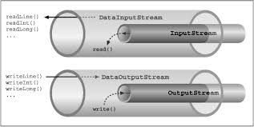
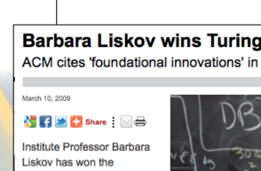

Paradigms & Languages
Agile Software Development


We start by exploring modern software development languages, frameworks and tools. This will include a rapid review of Java and an exploration of the principle features of successors to Java now emerging.
The Java Programming Language

The java programming language is a mature, well understood language that powers many enterprises and public web applications. Originally design for the consumer electronics market, it was quickly adopted as general purpose, versatile language relatively easy to learn and master.
Inheritance & Collections

Object Oriented thinking has consistently placed the inheritance relationship as a key feature of its approach. We review how this relationship is realized in Java. As you will see it is a complex relationship, and we will return to the difficulties it can cause in a later topic.
Serialization & Test Driven Development I

At the heart of the JDK are object I/O and Serialization capabilities, packaged into a comprehensive library for managing the life cycle of simple objects. Although the approach taken by this particular base library has to some extent been superseded by other approaches, it remains an important and influential technical approach, that can be usefully applied in simpler standalone applications.
Test Driven Development II

Test Driven Development has been among the most influential approaches in recent software engineering history. Here we look at its origins, principles and some of the important benefits of the approach.
Exceptions & Maven

Building and deploying Java applications can be a source of considerable complexity and ad-hoc procedures. Maven is a tool than aims to standardize this process, incorporating rigorous dependency management, repository structure and project layout best practices.
Pacemaker 1.0 in Xtend

Xtend is an interesting "Java Successor" language, which exhibits many modern programing language features. Strongly influenced by python and to a certain extend Scala. The language us a useful example of the effectiveness of type inference.
SRP

SRP is a simple yet effective guideline for determining the core features of a class. It is the first of the SOLID principles, a well respected source of effective design practices.
Test Driven Development III

Right BICEP: Guidelines for Composing Tests phrased using the acronym: - Right, Boundary, Inverse, Cross-check, Errors & Performance.
CORRECT: More guidelines - this time the acronym is Conformance, Ordering, Range, Reference, Existing, Cardinality, Time.
OCP
THe second of the "SOLID" principles: "Software Entities should be open for extension but closed for modification"
Test Doubles
TDD is a rich and mature field, with its own literature and best practices. Here we review an attempt to capture some of this best practice into a set of higher level patterns.
LSP + Play

Another of the SOLID principles - this time a more subtle take on inheritance, emphasizing the core behaviours expected by the relationship.